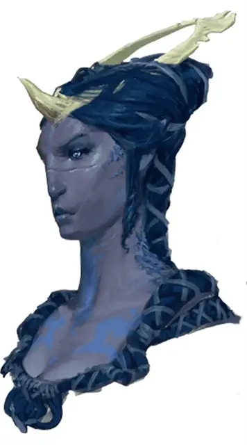

Йимрит
Iymrith
Громадный Дракон, законно-злой, именной НИП

Класс Доспеха 22 (природный доспех)
Хиты 481 (26к20 + 208)
Скорость 40 футов, летая 80 футов, копая 40 футов
| мод | спас | ||
|---|---|---|---|
| СИЛ | 29 | +9 | +9 |
| ЛОВ | 10 | +0 | +7 |
| ТЕЛ | 27 | +8 | +15 |
| мод | спас | ||
|---|---|---|---|
| ИНТ | 18 | +4 | +4 |
| МДР | 17 | +3 | +10 |
| ХАР | 21 | +5 | +12 |
Навыки Восприятие +17, Скрытность +7
Иммунитет к урону электричество
Чувства слепое зрение 60 футов, тёмное зрение 120 футов, пассивное Восприятие 27
Языки Общий, Великаний, Драконий, Терран
Опасность 23 (50000 опыта)
Бонус мастерства +7
Особенности
Легендарное сопротивление (3/день). Если Йимрит проваливает спасбросок, он может вместо этого сделать спасбросок успешным.
Смена формы. Йимрит магически превращает себя в штормового великана [storm giant] женского рода или обратно в свою изначальную форму. Она обращается в свою истинную форму после смерти. Любые предметы, надетые на неё или несомые ею, поглощаются её новой формой или оказываются у неё в руках (на выбор дракона).
В форме штормового гиганта Йимрит сохраняет своё мировоззрение, хиты, Кости хитов, способность говорить, навыки, легендарное сопротивление, действия логова, а также показатели Интеллекта, Мудрости, Харизмы и все бонусы к навыкам. Её другие характеристики заменяются показателями новой формы.
Действия
Мультиатака. Йимрит может использовать Ужасающее присутствие. Затем он совершает три атаки: одну укусом, и две когтями.
Укус. Рукопашная атака оружием: +16 к попаданию, досягаемость 15 футов, одна цель. Попадание: Колющий урон 20 (2к10 + 9) плюс урон электричеством 11 (2к10).
Коготь. Рукопашная атака оружием: +16 к попаданию, досягаемость 10 футов, одна цель. Попадание: Рубящий урон 16 (2к6 + 9).
Хвост. Рукопашная атака оружием: +16 к попаданию, досягаемость 20 футов, одна цель. Попадание: Дробящий урон 18 (2к8 + 9).
Ужасающее присутствие. Все существа на выбор Йимрит, находящиеся в пределах 120 футов от него и знающие о его присутствии, должны преуспеть в спасброске Мудрости Сл 20, иначе станут испуганными на 1 минуту. Существо может повторять этот спасбросок в конце каждого своего хода, оканчивая эффект на себе при успехе. Если спасбросок существа был успешным, или эффект на нём окончился, оно получает иммунитет к Ужасающему присутствию этого дракона на следующие 24 часа.
Электрическое дыхание (перезарядка 5–6). Йимрит выдыхает молнию 120-футовой линией шириной 10 футов. Все существа в этой линии должны совершить спасбросок Ловкости Сл 23, получая урон электричеством 88 (16к10) при провале, или половину этого урона при успехе.
Использование заклинаний. Йимрит накладывает одно из следующих заклинаний, не требуя компонентов заклинаний и используя Харизму в качестве базовой характеристики (Сл спасброска заклинаний 20):
• 1/день каждое: обнаружение магии [detect magic], рассеивание магии [dispel magic], град [ice storm], изменение формы камня [stone shape], телепортация [teleport]
Легендарные действия
Йимрит может совершить 3 легендарных действия, выбирая из представленных ниже вариантов. За один раз можно использовать только одно легендарное действие, и только в конце хода другого существа. Йимрит восстанавливает использованные легендарные действия в начале своего хода.
Обнаружение. Йимрит совершает проверку Мудрости (Восприятие).
Атака хвостом. Йимрит совершает атаку хвостом.
Атака крыльями (стоит 2 действия). Йимрит бьёт своими крыльями. Все существа в пределах 15 футов от дракона должны преуспеть в спасброске Ловкости Сл 24, иначе получат дробящий урон 16 (2к6 + 9) и будут сбиты с ног. После этого Йимрит может пролететь на расстояние, не превышающее половину скорости полёта.
Описание
См. дополнительно статью: "Бестиарий: Драконы"